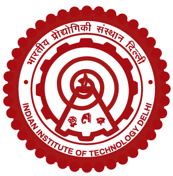

Shuttle Schedule
KCA 1&2 · KCA 3 · Campus — one clockwise loop, both directions.
now—
KCA 1&2
→
KCA 3
→
Campus
→
back to KCA 1&2
Source: the printed shift poster, transcribed 19 Aug 2026. Countdowns use your device clock, so they only line up if your phone is on Gulf time. Known gaps: the poster shows no weekday/weekend or holiday variation, so this page shows the same times every day — check the physical board before relying on it for a weekend trip. Trips 16 and 17 on the Campus → Dorms leg are both printed as 10:00 AM; that is reproduced as printed, not corrected.